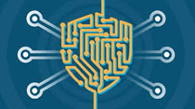

Los virus informáticos se propagan a través de varios medios, como archivos adjuntos en correos electrónicos, descargas de software infectado, dispositivos USB y enlaces maliciosos. Una vez introducidos en un sistema, los virus pueden replicarse rápidamente y propagarse a otros dispositivos conectados en la misma red, ampliando su alcance y daño.
Los virus pueden corromper archivos, haciendo que los datos sean ilegibles o inutilizables, y en algunos casos, están diseñados para borrar archivos, lo que puede resultar en la pérdida irreversible de información importante. Este tipo de daño puede ser devastador tanto para individuos como para organizaciones, ya que la pérdida de datos críticos puede interrumpir operaciones y causar daños significativos.
Los virus consumen recursos del sistema, provocando una disminución significativa en el rendimiento y la velocidad del equipo infectado. Además, pueden causar inestabilidad en los sistemas operativos y aplicaciones, llevando a que estos se cuelguen o se bloqueen con frecuencia, lo cual interfiere con la productividad y el funcionamiento normal.
Algunos virus contienen keyloggers, que registran las pulsaciones del teclado para robar información personal, como contraseñas y números de tarjetas de crédito. Otros crean puertas traseras que permiten a los atacantes acceder y controlar remotamente el sistema infectado, comprometiendo la privacidad y seguridad del usuario.
La eliminación de virus y la recuperación de datos pueden ser costosas y requerir mucho tiempo. Las interrupciones causadas por infecciones de virus también pueden resultar en pérdida de productividad y, por ende, en pérdida de ingresos para las empresas. El impacto económico de un ataque de virus puede ser significativo, especialmente para las pequeñas y medianas empresas.
Los virus pueden propagarse rápidamente a través de redes corporativas, comprometiendo múltiples sistemas y dispositivos. Además, pueden ser utilizados para facilitar ataques más grandes, como ataques distribuidos de denegación de servicio (DDoS), que pueden paralizar servicios en línea y redes completas.
Los virus modernos a menudo tienen capacidades avanzadas para evadir la detección por software antivirus. Incluso cuando son detectados, pueden ser difíciles de eliminar por completo. Si no se eliminan completamente, los virus pueden reactivarse y reinfectar el sistema, perpetuando el ciclo de infección y daño.
Las infecciones de virus pueden erosionar la confianza de los usuarios en la seguridad de sus dispositivos y redes. Esta pérdida de confianza puede afectar la reputación de las empresas afectadas y llevar a una mayor desconfianza en el uso de servicios en línea y digitales, lo cual puede tener consecuencias a largo plazo para la adopción de tecnologías digitales.
Los creadores de virus están constantemente desarrollando nuevas variantes que pueden pasar desapercibidas por las soluciones de seguridad existentes. Además, los ataques dirigidos, donde los virus son personalizados para atacar objetivos específicos, están en aumento, aumentando la efectividad y el daño potencial de estos ataques.
